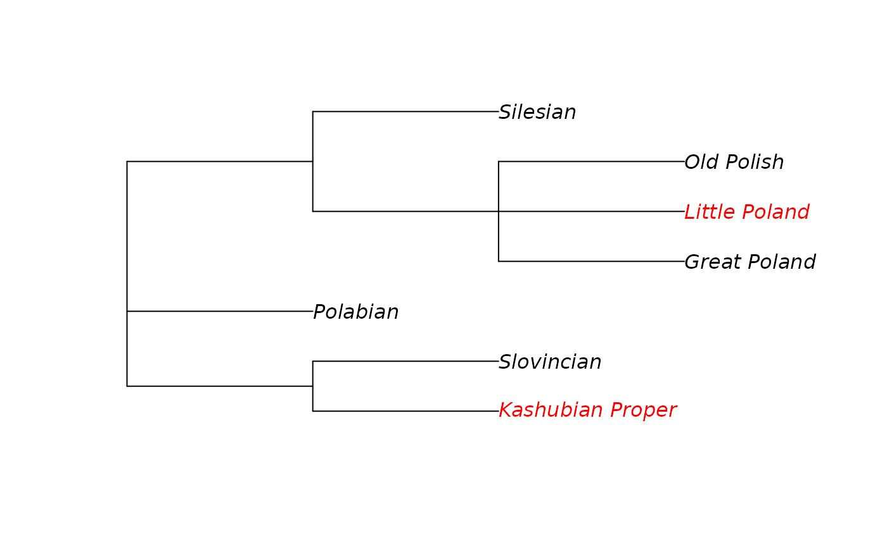

`lingtypology`: Glottolog functions
George Moroz
2024-03-13
Source:vignettes/lingtypology_glottolog_functions.Rmd
lingtypology_glottolog_functions.RmdThis package is based on the Glottolog database, so lingtypology has several functions for accessing data from that database.
1. Command name’s syntax
Most of the functions in lingtypology have the same syntax: what you need.what you have. Most of them are based on language name.
- aff.lang() — get affiliation by language
- area.lang() — get macro area by language
- country.lang() — get country by language
- iso.lang() — get ISO 639-3 code by language
- gltc.lang() — get glottocode (identifier for a language in the Glottolog database) code by language
- lat.lang() — get latitude by language
- long.lang() — get longitude by language
- level.lang() — get level by language
- subc.lang() — get subclassification in the Newick tree format by language
Some of them help to define a vector of languages.
- lang.aff() — get language by affiliation
- lang.iso() — get language by ISO 639-3 code
- lang.gltc() — get language by glottocode
Additionally there are some functions to convert glottocodes to ISO 639-3 codes and vice versa:
- gltc.iso() — get glottocode by ISO 639-3 code
- iso.gltc() — get ISO 639-3 code by glottocode
The most important functionality of lingtypology is the ability to create interactive maps based on features and sets of languages (see the third section):
- map.feature()
Glottolog database (v. 4.1) provides lingtypology with language names, ISO codes, glottocodes, affiliation, macro area, coordinates, and much information. This set of functions doesn’t have a goal to cover all possible combinations of functions. Check out additional information that is preserved in the version of the Glottolog database used in lingtypology:
names(glottolog)## [1] "glottocode" "language" "iso"
## [4] "level" "area" "latitude"
## [7] "longitude" "countries" "affiliation"
## [10] "subclassification"Using R functions for data manipulation you can create your own database for your purpose.
2. Using base functions
All functions introduced in the previous section are regular functions, so they can take the following objects as input:
- a regular string
iso.lang("West Circassian")## West Circassian
## "ady"
lang.iso("ady")## ady
## "West Circassian"
lang.aff("Abkhaz-Adyge")## [1] "Ubykh" "Abkhaz" "Abaza" "West Circassian"
## [5] "Kabardian"I would like to point out that you can create strings in R using single or double quotes. Since inserting single quotes in a string created with single quotes causes an error in R, I use double quotes in my tutorial. You can use single quotes, but be careful and remember that 'Ma'ya' is an incorrect string in R.
- a vector of strings
## Kabardian Aduge
## "Eurasia" "Africa"## Kabardian
## "Abkhaz-Adyge, Circassian"
## Russian
## "Indo-European, Classical Indo-European, Balto-Slavic, Slavic, East Slavic"- other functions. For example, let’s try to get a vector of ISO codes for the Circassian languages
## Ubykh Abkhaz Abaza West Circassian Kabardian
## "uby" "abk" "abq" "ady" "kbd"If you are new to R, it is important to mention that you can create a table with languages, features and other parametres with any spreadsheet software you used to work. Then you can import the created file to R using standard tools.
3. Spell Checker: look carefully at warnings!
All functions which take a vector of languages are enriched with a kind of a spell checker. If a language from a query is absent in the database, functions return a warning message containing a set of candidates with the minimal Levenshtein distance to the language from the query.
aff.lang("Kabardian")## Kabardian
## "Abkhaz-Adyge, Circassian"4. subc.lang() function
The subc.lang() function returns language subclassification in the Newick tree format.
subc.lang("Lechitic")## Lechitic
## "((Kashubian_Proper:1,Slovincian:1)kash1274:1,Polabian:1,((Great_Poland:1,Little_Poland:1,Old_Polish:1)poli1260:1,Silesian:1)poli1262:1)lech1241:1;"This format is hard to interpret by itself, but there are some tools in R that make it possible to visualise those subclassifications:
It is possible to specify colors of tips in case you want to emphasize some nodes:

As you can see nodes are counted from bottom to top.
For more sophisticated tree visualization you can look into ggtree package. There are several linguistic packages that provide some functionality for creating glottolog trees:
-
glottoTreespackage by Erich Round -
lingtyprpackage by Laura Becker